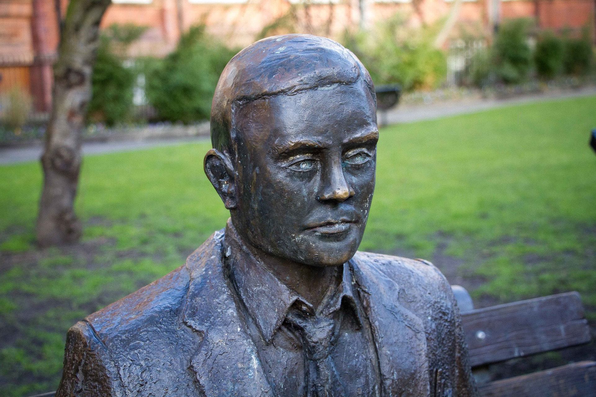
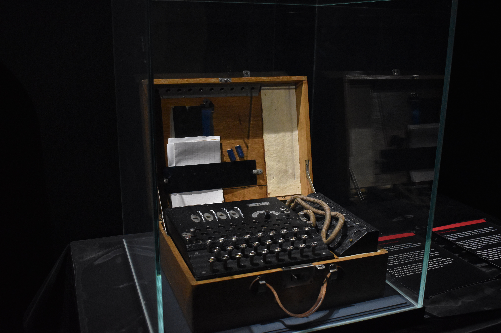

About Alan Turing
Alan Turing was a British mathematician who assisted in breaking Nazi codes during WWII. The concept of the 'Turing machine', which he proposed in a 1936 paper, became one of the foundations of current computer science. Also, his work is widely recognised not only as having laid the foundations of computer science but also of artificial intelligence research.
The Turing Machine
Turing began his education as a mathematician at King's College, Cambridge University in England. His work there led to the publication of his paper 'On Computable Numbers' in 1936, at the age of 24, which is regarded as an important work for understanding the foundations of mathematics. Turing also imagined a machine that worked with instructions printed on the tape, in order to explore the limits of what could be proved mathematically and logically. It was a machine that could read both instructions and data from tape, and vice versa, and write to tape (Harvard University 2012). The original form of this calculator was called a Turing machine and is still used today as a mathematical description of a computer (ibid).
Enigma
Before the beginning of World War II, in September 1938, Turing began working part-time at the Government Cryptology School (GCCS), the UK's cryptanalysis organisation. His work there was the decoding of the 'Enigma'. It was a type of cypher machine used by the Germans, whose cypher system changed on a daily basis, making deciphering difficult. Turing created 'bombes', machines that could loop through thousands of Enigma settings to match the available "cribs (the most frequently occurring words across messages) in order to identify the correct key” (Harvard University 2012). He also contributed to the 'Hut 8' team at Bletchley Park which cracked all of the German naval codes. This was vital in keeping Allied convoys safe from U-boats and assisting Allied forces during the Battle of the Atlantic (Imperial War Museums 2022). He led decryption operations and was instrumental in the eventual Allied victory.
The Turing Test
Turing proposed the Turing Test in a paper titled ‘Computing Machinery and Intelligence’ published in 1950. The test has three players: one is a computer, one is a human, and one is a questioner who is separated from the first two and guesses which of the two is the machine (JavaTpoint 2021). This research is now a motivation in artificial intelligence theory and development(AI) (Frankenfield 2022).